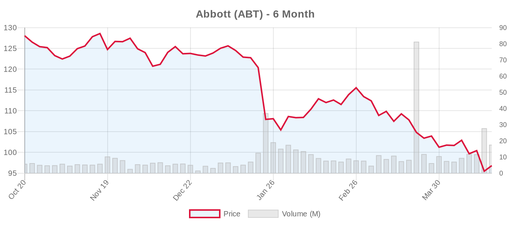
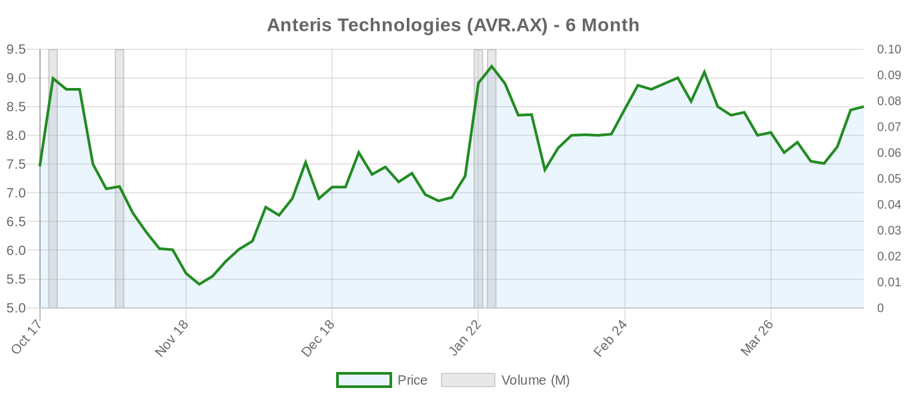

|
||||||||
|
Week of April 12 - April 18, 2026 By E. Nolan Beckett |
||||||||
|
||||||||
Week in ReviewThis was a landmark week for the tricuspid valve space: real-world registry data from over 1,000 Edwards EVOQUE transcatheter tricuspid valve replacements were published in JAMA, CMS initiated the first-ever U.S. National Coverage Analysis for transcatheter tricuspid valve replacement, and VDyne secured an FDA IDE for the first head-to-head randomized trial comparing two TTVR platforms. In the aortic valve arena, two separate analyses documented alarming rates of TAVR use in patients under 65 — a population where both major guidelines recommend surgery — raising serious questions about indication creep. A JAMA Cardiology analysis of the EVoLVeD trial showed that myocardial fibrosis predicts outcomes in asymptomatic severe aortic stenosis but does not clearly identify who benefits most from early intervention. Abbott reported Q1 earnings mid-week, while Edwards Lifesciences and Boston Scientific report next week in what will be the most consequential earnings stretch of the year for structural heart. Markets were volatile throughout, with Abbott hitting a fresh 52-week low after a 6% single-day decline. Top Stories This Week[NOTABLE] Real-World EVOQUE Tricuspid Replacement Data Published in JAMA — 1,034 Patients, Strong Early ResultsMakkar et al. published the first large-scale real-world analysis of the Edwards EVOQUE transcatheter tricuspid valve replacement system using STS/ACC TVT Registry data. Among 1,034 attempted procedures across 82 U.S. centers (February 2024–March 2025), valve implantation succeeded in 98.4%, with 97.7% achieving mild-or-less tricuspid regurgitation at 30 days. All-cause 30-day mortality was 3.1%, stroke was 0.2%, and KCCQ-OS quality-of-life scores improved by a striking 22.4 points. Functional status shifted dramatically: 82.7% were in NYHA Class I/II at 30 days versus just 26.8% at baseline. These numbers are genuinely encouraging and closely mirror the TRISCEND II pivotal trial results — a reassuring signal that controlled trial outcomes are translating to broader clinical practice. The 15.9% new pacemaker rate in CIED-naïve patients and 7.9% bleeding events were actually lower than in the randomized trial, possibly reflecting conservative patient selection during early commercial experience. However, 30-day follow-up is very short for a permanent implant, and we lack data on durability, late thrombosis, and sustained functional benefit beyond the initial postprocedural period. Combined with TRISCEND II, TRILUMINATE, and Tri.Fr, the accumulating evidence base appears to justify the ESC 2025 Class IIa recommendation for transcatheter tricuspid therapy — though the ACC/AHA 2020 guidelines did not address this space at all, and their next update will need to reconcile a rapidly evolving evidence landscape. [NOTABLE] CMS Launches First-Ever National Coverage Analysis for Transcatheter Tricuspid Valve ReplacementIn what may be the most consequential regulatory development for the tricuspid space in the United States, the Centers for Medicare & Medicaid Services initiated a National Coverage Analysis (CAG-00467N) for transcatheter tricuspid valve replacement. This is the first formal U.S. coverage pathway for TTVR, signaling that the TRISCEND II evidence base and the JAMA registry data are being taken seriously at the federal level. A favorable determination would create a reimbursement pathway that could fundamentally change how severe TR is managed in the U.S. Edwards Lifesciences is the primary beneficiary, with its EVOQUE system the leading TTVR platform. Separately, CMS also opened a reconsideration of the TAVR National Coverage Determination (CAG-00430R2), which could affect site-of-service requirements, covered indications, and access to TAVR at lower-volume centers. [NOTABLE] Nearly Half of Lowest-Risk Patients Under 65 Are Receiving TAVR — Directly Counter to GuidelinesTwo complementary studies this week raised urgent concerns about TAVR use in younger patients. Glance et al. (Annals of Thoracic Surgery) analyzed 13,907 aortic valve replacements in adults under 65 from the Vizient database (2018–2023) and found that 55.8% received TAVR — and even among the lowest-risk patients (predicted mortality <0.5%), 46.5% underwent TAVR. Hospital-level variation was enormous (median odds ratio 2.69), suggesting institutional culture and financial incentives are driving decisions more than evidence. A second analysis from the same journal documented similar patterns. Both the 2020 ACC/AHA guidelines (Class I for SAVR under 65) and 2025 ESC/EACTS guidelines (SAVR preferred under 70 at low surgical risk) recommend surgery in this population. These patients were underrepresented in all major TAVR randomized trials, and long-term durability data beyond 10 years remain unavailable. This is precisely the indication creep that Badhwar, Kaul, and others have warned about — and these data suggest guidelines are not uniformly influencing practice in the population where lifetime valve management matters most. [NOTABLE] VDyne Secures FDA IDE for First Head-to-Head TTVR Randomized TrialVDyne received FDA Investigational Device Exemption to initiate the TRIVITA pivotal trial (NCT07516444) — a 730-patient randomized study comparing VDyne's TTVR system against Edwards' EVOQUE in patients with symptomatic severe TR. This is the first device-versus-device RCT in the transcatheter tricuspid replacement space, marking significant maturation of the field. That the trial uses EVOQUE as the active comparator (rather than medical therapy) is itself a validation of Edwards' market position — but also introduces a direct competitive threat to the first-mover franchise. The trial asking "which TTVR?" before we have fully answered "TTVR at all for long-term outcomes?" reflects a market that is racing ahead of guideline consolidation. EVoLVeD Fibrosis Analysis: Myocardial Fibrosis Predicts Events but Does Not Clearly Identify Early-Intervention RespondersA post hoc analysis of the EVoLVeD trial in JAMA Cardiology examined 224 asymptomatic severe AS patients with midwall fibrosis on cardiac MRI. Higher fibrosis burden independently predicted adverse composite events (HR 1.23 per 1% increase), driven by unplanned AS-related hospitalizations. In the high-fibrosis subgroup, early intervention numerically reduced the primary endpoint (20% vs. 32%) and significantly reduced hospitalizations (HR 0.27). But critically, the interaction between fibrosis burden and treatment arm did not reach statistical significance (P = 0.39), meaning we cannot conclude that fibrosis identifies who specifically benefits from early intervention. This is a post hoc analysis of a modest trial — hypothesis-generating, not definitive. The ESC 2025 guidelines already reference EVoLVeD among the four RCTs (with EARLY TAVR, RECOVERY, and AVATAR) supporting early intervention in asymptomatic severe AS (Class IIa), but fibrosis-guided patient selection remains unvalidated prospectively. Aortic Valve (TAVR/TAVI)Vascular Access Complications After TAVR: 4-Fold Higher Early MortalityMesar et al. analyzed 5,230 transfemoral TAVR patients from a single high-volume center. Vascular complications occurred in 2.9% (n=154) but carried disproportionate impact: in-hospital mortality was 7.8% vs. 0.2% in uncomplicated cases, and propensity-matched 30-day mortality was four-fold higher (OR 4.02, 95% CI 1.98–8.18). Patients who survived the perioperative period had comparable 5-year survival (51.1% vs. 50.9%), suggesting the damage is front-loaded. This is a critical reminder that "low-risk TAVR" is not "no-risk TAVR," especially as the field expands to younger patients where complication tolerance is lower. Study limitations include single-center retrospective design and the relatively small complication cohort. Evolut Low Risk 5-Year Isolated-Procedure OutcomesRamlawi et al. (Annals of Thoracic Surgery) published 5-year outcomes comparing isolated TAVR versus isolated SAVR from the Evolut Low Risk trial, removing confounders from concomitant procedures. These data join PARTNER 3 and DEDICATE in building the medium-term evidence base, though the ESC 2025 guidelines already shifted the TAVI-preferred threshold to age ≥70 based in part on earlier Evolut follow-up. The fundamental question — whether 5-year data are sufficient to inform lifetime decisions in younger patients — remains unresolved. Stroke Risk After TAVR: No Difference Between BEV and SEVKumar et al. (JACC: Advances) analyzed 6,663 TAVR patients across CommonSpirit Health hospitals. After inverse probability weighting, there was no significant difference in stroke-free survival between balloon-expandable (n=5,445) and self-expanding valves (n=1,218; aHR 1.54, 95% CI 0.79–2.68). The independent predictors of stroke were clinical rather than device-related: age, prior stroke, and STS risk score. The overall 1.3% stroke rate is consistent with benchmarks, though the SEV cohort was substantially smaller, raising residual confounding concerns. TAVR-in-TAVR: The PANDORA International RegistryPopolo Rubbio et al. (JAHA) reported 172 TAVR-in-TAVR cases from approximately 30,000 TAVR procedures (0.6% repeat rate). Technical success was 91.3%, but 30-day device success was only 68% — driven by elevated residual gradients — and 30-day mortality was a sobering 7.3%. The intra-annular-into-intra-annular configuration showed the numerically worst 1-year outcomes. These data land squarely in the lifetime management conversation emphasized by the ESC 2025 guidelines and reinforce concerns about the reintervention burden as TAVR expands to younger patients. TAVR explant carries 12–17% mortality per prior data; redo-TAVR is safer but introduces progressive patient-prosthesis mismatch. TAVR Reintervention: Failure Mechanism Does Not Predict OutcomesPenta et al. (Circulation: Cardiovascular Interventions) reported from the EXPLANTORREDO-TAVR registry (553 patients, 29 centers) that structural valve deterioration (SVD, 65%) and non-structural valve dysfunction (NSVD, 35%) had distinct profiles but neither predicted differential mortality after reintervention. Thirty-day mortality for TAVR-explant remained 12–16%, while redo-TAVR mortality was substantially lower (1.7–3.2%). These data support redo-TAVR when anatomically feasible. Transaortic Flow Rate May Outperform LVEF and SVI for Low-Gradient AS PrognosisA Mayo Clinic analysis (Heart) of 475 patients with low-gradient severe AS found that transaortic flow rate (TAFR) was the only flow parameter independently associated with 1-year mortality (HR 2.38; 95% CI 1.19–4.76) — neither LVEF <50% nor SVI <35 mL/m² reached significance. If validated prospectively, TAFR could reshape the diagnostic algorithm for this challenging subset. Current guidelines rely on LVEF and SVI to define low-flow states; this is a single-center, retrospective study requiring prospective confirmation. NOTION-3 Substudy: PCI Harms Frail TAVR Patients Without BenefitA post hoc substudy of NOTION-3 (JACC: Cardiovascular Interventions) examined 407 TAVR patients with frailty data. Among non-frail patients, PCI reduced MACE, mortality, MI, and urgent revascularization (HR 0.42). But in frail patients, PCI provided no benefit and increased bleeding (HR 2.51, P = 0.011). Frailty was assessed post hoc using a calculated score — not a pre-specified validated instrument — and subgroup sizes were small (130 frail patients). These findings suggest a "less is more" approach to revascularization in the frailest TAVR candidates but require prospective confirmation. GASS-TAVR: Geriatric Assessment Score for Futility PredictionFumagalli et al. (JACC: Cardiovascular Interventions) developed and validated a geriatric assessment-based score predicting 1-year mortality or functional decline in 562 TAVR candidates ≥75 years. The score achieved AUC 0.92 in derivation and 0.87 in validation — substantially outperforming STS-PROM. Predictors included nutritional status, functional dependence, renal function, and pulmonary artery pressure. Requires external validation before clinical adoption. Additional TAVR Studies
Mitral Valve (Repair & Replacement)TR Prognosis After Mitral TEER — EXPANDed StudiesEstevez-Loureiro et al. (ESC Heart Failure) analyzed 160 patients from the pooled EXPAND and EXPAND G4 registries with severe TR at baseline who underwent successful mitral TEER without direct tricuspid intervention. At 30 days, 73% improved to ≤moderate TR, and this was sustained in 86% at one year. Larger LV dimensions and lower LVEF predicted TR improvement — consistent with the hypothesis that in ventricular secondary MR, fixing the mitral valve can resolve concomitant functional TR. One-year mortality was numerically halved in the TR-improved group (12.4% vs. 22.3%, P = 0.16). This suggests a "mitral-first" approach may be appropriate for patients with concomitant TR driven by ventricular secondary MR, potentially avoiding a second tricuspid intervention. The ESC 2025 guidelines do not yet provide firm guidance on mitral-tricuspid TEER sequencing. Transmitral Gradients After Valve-in-Valve: The ParadoxAbbas et al. (JACC: Cardiovascular Interventions) analyzed 5,401 mitral valve-in-valve (MVIV) procedures from the STS/ACC TVT Registry (2015–2024). Paradoxically, a low discharge transmitral gradient (<4 mmHg) was associated with higher 3-year mortality compared to intermediate (4–7 mmHg; adjusted HR 1.52) and high gradients (>7 mmHg; adjusted HR 1.35). Low-gradient patients had lower cardiac output and cardiac index, indicating the gradient reflected hemodynamic status rather than valve function. The accompanying editorial by Pilgrim and Tomii argued that cardiac output must be integrated into post-MVIV assessment — paralleling the low-flow, low-gradient paradox in aortic stenosis. Tendyne TMVR Across MAC Severity GradesA TENDER registry sub-analysis (J Clin Med) evaluated 53 patients undergoing transapical Tendyne TMVR across mitral annular calcification severity grades. Technical success was comparable regardless of MAC severity (89–95%). Complete MR abolishment was 88.7%, but 1-year all-cause mortality ranged from 18.8% to 43.8% across cohorts. The ESC 2025 guidelines rate TMVI for degenerative MS with MAC as Class IIb at experienced centres — these data support continued cautious exploration in this very high-risk population. 5-Year Cardiovalve TMVR Follow-UpBenetis et al. (JACC Case Reports) described a single patient with ischemic MR treated with transfemoral TMVR using the Cardiovalve device, demonstrating no MR, no valve degeneration, and NYHA Class I at 5 years. An N-of-1 case report is not evidence of durability, but long-term TMVR data of any kind are scarce and watched closely by the field. Colombian MitraClip ExperienceMelo-Burbano et al. reported 94 patients treated with MitraClip in Colombia over 9 years (predominantly functional MR). Procedural success was 93.6%, 1-year mortality 16%, and HF rehospitalization 39.4% — the latter underscoring that TEER is not curative in ventricular SMR and requires ongoing GDMT optimization. Transatrial TMVR for Severe MAC — Mayo ClinicCurran et al. reported 25 patients who underwent transatrial TMVR with balloon-expandable prostheses (mostly SAPIEN 3) for severe MAC. Operative mortality was 12%, and 5-year survival was 50.6% — acceptable for this very high-risk cohort but a reminder that this remains a palliative rather than curative intervention. Tricuspid Valve (Repair & Replacement)Meta-Analysis of Commercial Transcatheter Tricuspid DevicesNg et al. (Annals of Cardiothoracic Surgery) published the first systematic review of commercially available transcatheter tricuspid devices, aggregating 1,589 patients across 13 studies. Key findings: 30-day mortality 1.8%, 1-year mortality 9.9%, 1-year HF hospitalization 20.1%, TR ≤moderate achieved in 66.5% at 1 year, and 81.1% in NYHA I/II. These real-world numbers provide essential context for the ESC 2025 Class IIa recommendation. The 66.5% TR reduction rate is meaningfully lower than the near-universal success seen in TTVR-specific trials, suggesting the meta-analysis is dominated by TEER data where residual TR is more common. The 20% HF hospitalization rate is a sobering reminder that TR reduction does not always translate into clinical event prevention. Asia-Pacific Data: T-TEER vs. TTVRChan et al. (Annals of Cardiothoracic Surgery) compared 174 patients across Hong Kong, Taiwan, and Thailand. TTVR achieved TR ≤moderate in 100% vs. 74% for T-TEER (P = 0.001), but at the cost of higher major adverse events (15.8% vs. 2.2%) and longer hospitalization (15 vs. 5 days). The emerging paradigm: TEER first for suitable anatomy, TTVR as a more definitive but higher-risk option for complex cases. Tricuspid Special Issue: Additional Key Articles
Surgical vs. Transcatheter ComparisonsThe Under-65 TAVR Utilization ProblemTwo studies this week documented that TAVR is being used at rates far exceeding guideline recommendations in younger patients. Glance et al. found that 55.8% of patients under 65 received TAVR, with enormous hospital-level variation (median odds ratio 2.69). Even among the lowest-risk patients under 65, nearly half received TAVR. Both the ACC/AHA 2020 guidelines (SAVR Class I under 65) and ESC 2025 (SAVR preferred under 70 at low risk) recommend surgery. The variation across hospitals — not patients — suggests non-clinical factors are driving procedure selection. An accompanying Annals editorial directly challenged the economic incentives fueling TAVR expansion into younger populations. This is exactly the kind of practice-evidence mismatch that critics have warned about, and the lifetime management implications are real: TAVR explant carries 12–17% mortality, and redo-TAVR (7.3% 30-day mortality per the PANDORA data published this week) creates progressive hemodynamic compromise. Training the Hybrid OperatorZancanaro and Danesi (EJCTS) addressed the tension between expanding transcatheter training and preserving surgical competency. As TAVR captures the ≥70 population (ESC) or ≥80 population (ACC/AHA), surgical training volume erodes — threatening the pipeline of surgeons needed for SAVR in younger patients, reoperations, and complication management. Clinical Trials UpdateAortic Valve Trials
Mitral Valve — Repair Trials
Mitral Valve — Replacement Trials
Tricuspid Valve — Repair Trials
Tricuspid Valve — Replacement Trials
Other Notable Trials
Valve Industry Stocks — Weekly Performance
Edwards Lifesciences (EW)
Edwards was the week's top performer among valve stocks, gaining 4% as the JAMA EVOQUE TTVR registry data validated the commercial launch and the CMS TTVR NCA announcement created a regulatory tailwind. TD Cowen reiterated Buy with a $97 target. The stock enters earnings week with momentum — Wednesday's Q1 report will be the single most important near-term catalyst for the structural heart sector. Key questions: SAPIEN volume trends post-ESC age-70 threshold, PASCAL TEER uptake, and EVOQUE tricuspid replacement commercial trajectory. Multiple institutional holders trimmed positions ahead of the report (Fisher Funds, Sumitomo Mitsui, Diversify Advisory, Robeco), consistent with pre-earnings portfolio rebalancing. Medtronic (MDT)
Medtronic slipped modestly this week, continuing its 6-month underperformance. The structural heart story — Evolut FX+ (PERFECT registry recruiting), Intrepid TMVR (pivotal trial at 1,056-patient target, still recruiting) — remains compelling but diluted within the diversified portfolio. The Evolut Low Risk 5-year isolated-procedure data published this week reinforce the platform's evidence base. At a forward P/E of 14.2x, MDT remains the cheapest large-cap in the valve space. Earnings aren't until June 3, so the stock will trade on sector sentiment from the EW and BSX reports next week. Abbott Laboratories (ABT)
Abbott had the worst week among valve companies, plunging 6% on a single day (April 17) to hit a new 52-week low of $93.92. The structural heart portfolio itself is performing well clinically — MitraClip remains the dominant TEER platform, TriClip has first-mover advantage in tricuspid repair, and today's EXPANDed and tricuspid meta-analysis data all used Abbott devices. But broader company headwinds (litigation exposure, tariff concerns) are overwhelming segment performance. The REPAIR-MR trial (NCT04198870, MitraClip vs. surgery for PMR) remains active and not recruiting. At 16x forward earnings and 26% discount to consensus target, ABT appears deeply undervalued — but the market is clearly pricing in risks that analysts haven't fully captured. Note: Abbott reported Q1 earnings on April 16 (mid-week), and the subsequent 6% decline suggests the report disappointed or lacked the structural heart catalysts investors sought. Boston Scientific (BSX)
Boston Scientific rebounded nearly 4% this week after touching its 52-week low ($60.59) the prior week, but the 6-month decline of 36% remains the steepest in the group. The company announced an $88.5M R&D expansion in Galway, Ireland — a strategic hub for structural heart development including ACURATE neo2 and PASCAL platforms. The massive gap between price ($64.23) and consensus target ($96.66) is the widest in the sector at 51% — either a compelling buying opportunity or evidence that the analyst community hasn't adjusted to a new growth trajectory. Earnings on April 22 will be the test. Anteris Technologies (AVR.AX)
Anteris continues as the speculative small-cap play in the structural heart space. The DurAVR single-piece ADAPT-treated tissue TAVR valve is advancing through its pivotal trial (NCT07194265, 1,650 patients, recruiting) alongside a completed early feasibility study (NCT05712161, 15 patients). The stock's 14% 6-month gain outperforms all large-cap peers, but with no revenue, minimal analyst coverage, and binary clinical trial risk, this remains a venture-stage investment. The differentiated single-piece tissue concept is scientifically interesting but faces an enormous competitive moat from Edwards and Medtronic. Private Companies: JenaValve Technology (Trilogy valve for AR; ARTIST trial recruiting), Meril Life Sciences (Myval THV; featured in LANDMARK and Kazakhstan data this week), J Valve Technology, and VDyne (TRIVITA trial IDE approved this week) are all privately held with no public stock data. Regulatory & PolicyCMS: Dual Coverage Actions Signal Structural Heart ExpansionTwo major CMS actions this week have significant implications for the structural heart field:
FDA Clears AI for Cardiac Amyloidosis Detection |
||||||||
|
||||||||
|